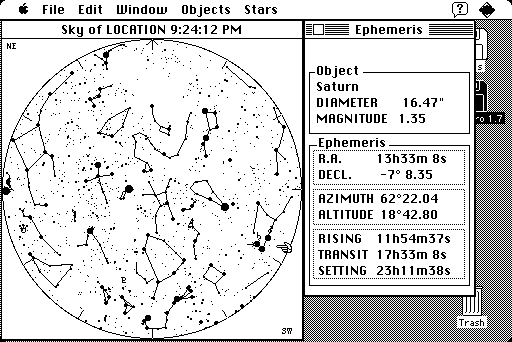

Download
MacAstro-17.zip (332K) MacAstro 1.7 repackaged into a zipped hfs disk image and checksum file. The disk image can be mounted with Mini vMac.
MacAstro-17.hqx (496K) MacAstro 1.7 in the original format.
copyright: Nicolas Mercouroff
mod date: Jun 14, 1994
license: shareware
last known url
(gone)
"calculates the appearance of the sky at any time between the years 1900 and 2100, and from any point on Earth." For System 6.0 or later.

If you find these downloads useful, please consider helping the Gryphel Project, which hosts them.
Here are the md5 checksums for the downloads, signed with Gryphel Key 5:
--------- GRY SIGNED TEXT --------- 2e3da0e32ab5327eed5a5cc46509a32d MacAstro-17.zip 68b4b7cecd765a46a9053b8e0c53a77d MacAstro-17.hqx ------- BEGIN GRY SIGNATURE ------- Gry/4Xa8CFcUzxdN/LbX6rYwZGagzpYz+dQVYNodnzh89c/xvlfJLBG9e2UQhRid ZTMPrcIQxcypg/52j11PP2FUFvU7wqqgzCFswKIoIGREnw5+Lfo23rulcK0EmySr 5IFznaYZtGDRo3+Uap+PGHNF37zJ8W8Q9A1LNI1lr547IoayrY5f9JfITKKY7i42 -------- END GRY SIGNATURE --------